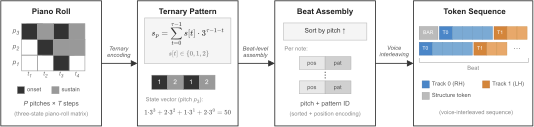

BeatEdit
Symbolic Music Generation as Explicit Editing
01Why explicit editing?
Music creation is a process of revision.
Correct a wrong note
Change the error; retain the phrase.
Reshape accompaniment
Revise the left hand; preserve the melody.
Complete missing bars
Write new content into existing context.
02The bottleneck is the representation: R1–R3
R1 · Atomic edit units
Each note should map to a compact, self-contained token group, allowing one edit label to address a complete musical target.
R2 · Source–target alignment
Source and target need stable positional correspondence, so edit labels can be extracted by directly comparing aligned units.
R3 · Edit locality
An edit should affect a bounded token span and preserve a valid encoding, without updating the rest of the sequence.
| Encoding | R1 | R2 | R3 | Bottleneck |
|---|---|---|---|---|
| MIDI-Like | × | × | × | Onset/offset decoupled |
| REMI | × | × | × | Insert/delete shifts positions |
| Structured | ∼ | × | ∼ | Relative time propagates |
| CPWord | ∼ | × | ∼ | No structural grid |
| BEAT (Rel.) | ✓ | ✓ | ∼ | Within-beat pitch cascade |
| BEAT (Abs.) | ✓ | ✓ | ✓ | Meets all three requirements |
✓ satisfied · × violated · ∼ partial.
03BEAT supplies a beat-aligned editing space

04Choose the mechanism by edit density
SeqTag
Detect erroneous tokens and assign edit tags, keeping low-confidence positions unchanged.
IterEdit
Delete–insert–predict cycles revise accompaniment while preserving melody and structure.
TagFill
Allocate mask positions, then fill them in two confidence-ranked passes while preserving surrounding musical context.
05Results: accuracy, latency, and encoding
Mechanism and encoding both matter: explicit editing improves accuracy and speed; edit-compatible encoding improves recovery. Correction/editing: beat exact match; completion: POP909 Note F1; encoding: recovery.
65 vs 9,677 ms
655 vs 9,458 ms
Note F1 · POP909 · 35 vs 1,747 ms
Recovery · Same SeqTag